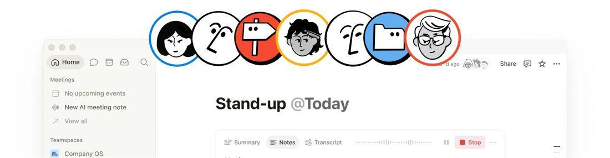
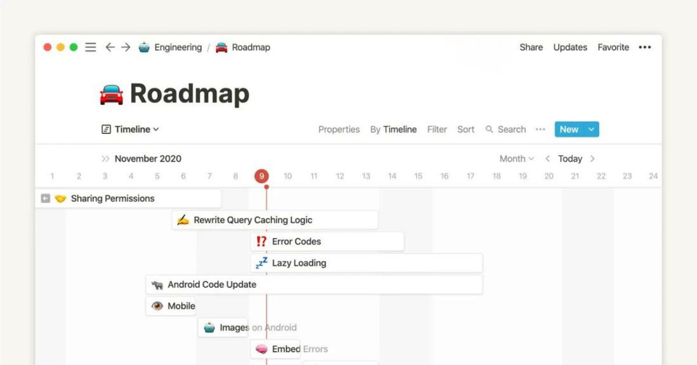
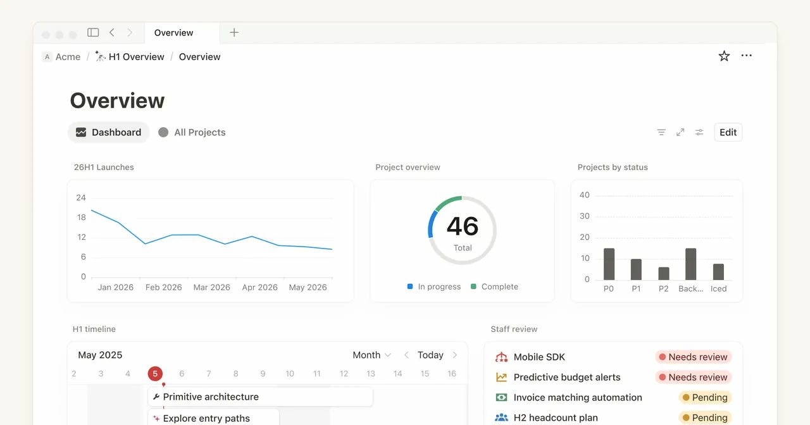

Notion Review: The One Tool That Tries to Be Every Tool
Try it: Visit Notion.
7.1 Sensible Score, out of 10
Ratings by business type
Best suited to: consultants, professional services, engineering and project led small firms, operations teams, writers and creators running a business from one workspace.
Scored on our ten metric Sensible Score. See How We Rate for the method and what each number means.

Sensible Stack: Streamlining business, whatever your size
The short answer
If you run projects solo or in a small team and want one workspace for the documents, the budget, the task list and the plan, Notion is the strongest all rounder, and its free tier is generous enough that many solo users will never pay. The price is a learning curve up front, a Gantt chart that is not really a Gantt chart, and a constant temptation to go shopping for a better template. Unlike monday.com, which our reviewer liked more on first impression, Notion charges nothing to a team of one and everything to your patience. He paid the patience.
What it is
Notion is a workspace built from pages and databases. A page can be a procedure document; a database can be a task list, a budget tracker or a timeline; and the two link together, so a job can point at the procedure it follows. Most project tools store tasks. Notion stores the whole working environment around the tasks: the documents, the numbers and the plan in one place. The consequence cuts both ways: very little it cannot be persuaded to do, and almost nothing it does for you before you have built it.
Running my project work in it: what actually happened
I tested the field against the work itself: engineering projects, run solo, planned waterfall style, with documents to keep, budgets to watch and task lists to work through. monday.com won the first impression and nearly won outright; ClickUp ran it close. Notion is the one I settled on and still use day to day, for a less glamorous reason: it bent to fit the work instead of asking the work to bend.
The pattern that made it stick is simple. My written procedures live in Notion as documents, and each job links to the procedures it follows. A project page holds the task list, the budget and the documents, so the context travels with the job. No board based tool in this series does that as naturally: boards store tasks, Notion stores the environment around them.
The customisation is the headline, and it earns it. There is a learning curve and a set of commands to learn, and I paid that tax up front. Once it clicks, adapting Notion to a new use is quick: a new register or tracker, built in an afternoon rather than researched, trialled and bought as another subscription. That is the trade: charged in learning at the start, repaid in flexibility ever since.
Then there is the Gantt shaped hole, and for waterfall work it is a real hole. The Timeline view plots my plan along a calendar and looks the part. Underneath, dependencies are finish to start only, and when a predecessor date moves, the dependent dates do not move with it. There are no baselines and no critical path. So the timeline is the picture I show people, and the schedule discipline is mine: when a date slips, I move the dependent dates by hand, because the tool will not.
Progress tracking is the other build it yourself job. I need a parent task's percentage complete to reflect its components, the same requirement monday.com failed in its own way. In Notion, completing every sub item does not mark the parent done, and no counter exists until you assemble one from rollups and formulas. It works once built, but building it is an evening of construction where rivals simply have a field. I count that evening as part of the purchase price.
And the confession, because every Notion review should carry one. The template ecosystem is enormous, and I have been down the rabbit hole: a free template, then a better one, then a better one again, My rule now is one template, adapted, then stop. Notion will test your discipline more than your skills.
Where it wins
- Customisation, full stop. Once you learn the basics, you can bend it in an afternoon: a snagging list this week, a document register next week. In this series only ClickUp matches it, and ClickUp charges for the privilege sooner
- The free tier's shape. For one person it is unlimited pages and blocks, which is why it beat ClickUp in our head to head: ClickUp's free workspace caps storage at 60 MB and meters features with use counters that never reset. Its own caps bite gently: a 5 MB limit per file upload, 7 days of page history and 10 guests
- Documents tied to jobs. Written procedures living in the same workspace as the tasks that use them, linked both ways, is the most useful pattern we found
- The Finta link. Finta syncs live bank balances and transactions into Notion via Plaid, so a budget watches the actual bank account. None of the other project tools in this series can do that
- A template ecosystem the size of a small country. Whatever you are trying to build, somebody has built it. See also: where it frustrates
Where it frustrates
- The learning curve is real, and charged up front. It feels harder on day one than monday.com or ClickUp, because the blank page asks you to design a system before you can use one. Budget a weekend of fiddling before it clicks
- The template rabbit hole. There is always a better template, and shopping for it can quietly replace the project management it was meant to support. The rule from our reviewer's own experience: one template, adapted, then stop
- The Gantt is not a Gantt: dependencies are finish to start only, dates do not shift automatically when a predecessor moves, and there are no baselines, no critical path and no workload view. For a real waterfall schedule, it is a picture of a plan, not a model of one
- Task progress is build it yourself. Completing every sub item does not mark the parent done, and there is no completion counter until you build one from rollups and formulas. Even the build needs a workaround, because the sub item percentages measure empty against not empty, not done against not done. Buildable, yes. Built in, no
- The free plan is a solo plan wearing a team plan's clothes. Add a second member and the workspace drops to a 1,000 block cap that deleting content does not lift. Guests do not trigger it, members do: the ceiling is the day you hire or partner up
- The goalposts move. Business rose from $15 to $20 per user per month in August 2025 as AI was folded in, then that included AI was metered with credits in October 2026. Buy it for what it is this quarter

The AI, and its price tag
Notion AI covers writing help, summaries, database autofill, questions across your workspace, AI Meeting Notes and Notion Agent. It lives only on the Business and Enterprise tiers: the old $10 add on any plan could buy was withdrawn in May 2025, and Free and Plus get a limited trial, not a working allowance. So the entry price for Notion AI is not an add on. It is doubling your per user price, from Plus at $10 to Business at $20.
The bigger catch is newer. In October 2026 Notion replaced the unlimited AI those tiers were sold with in 2025 with a monthly credit meter: announced on 19 October 2026, live for new workspaces that day and applied to existing ones on 2 November 2026. Each member gets 1,500 Standard credits (Notion picks the model, the Auto setting) and 500 Select credits (you pick the model, or run your own custom agents) a month. The balances are separate: no swapping, no pooling, and nothing rolls over. On Notion's own estimates (about 5 credits for a simple task, 10 for a medium one, 25 for a complex one), the Standard allowance is roughly 300 simple or 60 complex tasks a month. AI Meeting Notes joins the meter from 1 December 2026, at roughly 10 credits for a one hour meeting. When a balance runs out, its features pause until the reset, unless a workspace owner has switched on paid workspace credits ($10 per 1,000 monthly; $13 per 1,000 as an annual pool expiring at renewal), which only Business and Enterprise can buy.
The community frustration is less the amounts than the pattern: unlimited became a meter inside eighteen months, and the meter is per person, so a team cannot lend its light users' credits to its heavy ones. Our standing duplication warning applies with knobs on: if you already pay for an AI subscription such as ChatGPT, you may be paying for the same trick twice, and the second copy runs out. Buy Business for the permissions, the SSO and the meeting notes, not for unlimited AI. It was unlimited, briefly, and the brief is over.
Reporting and dashboards
Notion reports the way it does everything else: you build it. A database can be shown as a chart (bar, line, donut or number), rollups pull totals and percentages up from linked databases, and formulas do the arithmetic in between. A well built project home page, charts, timeline and status lists, reads well for a client or an executive, and a page designed for the reader beats a generic reporting module.
What you do not get is anything waiting for you at the top: no portfolio roll up across projects out of the box, no standard progress report to switch on, and every visual is only as current as the databases underneath it. The same rollups and formulas power your percent complete and your reporting, which is why this sits on the harder end of the learning curve. Strong for a small operation that builds it once; weak for anyone expecting reporting to arrive with the subscription. Monday builds the pretty picture for you. Notion hands you the parts.

Pricing
Checked November 2026, against Notion's own pricing page and current published comparisons. Per user per month. Members are billed; guests are free within your plan's limit. Monthly billing costs more: $12 for Plus and $24 for Business, against the annual figures below.
| Plan | Per user, per month, billed annually | Billed monthly | Blocks and files | Page history | Guests | The gate that matters |
|---|---|---|---|---|---|---|
| Free | $0 | $0 | Unlimited blocks for one member; 1,000 blocks in total once a second member joins; 5 MB per file upload | 7 days | 10 | The solo plan: genuinely unlimited alone, capped the moment the workspace becomes a team |
| Plus | $10 | $12 | Unlimited blocks and file uploads for teams | 30 days | 100 | Unlimited charts, custom forms and published sites, database automations; no working Notion AI beyond a trial, and no SSO |
| Business | $20 | $24 | Unlimited blocks and file uploads | 90 days | 250 | The AI tier: full Notion AI on the credit meter, Notion Agent, AI Meeting Notes, Enterprise Search, SAML SSO and private teamspaces |
| Enterprise | Custom, by quote | Custom | Unlimited | Custom | Custom | SCIM provisioning, audit log, advanced security controls and a dedicated success manager |
What that means in money, at the sizes small businesses actually buy. Totals are per month on annual billing, before tax:
| Members | Plus | Business |
|---|---|---|
| 1 | $10 | $20 |
| 3 | $30 | $60 |
| 5 | $50 | $100 |
Read the member column the opposite way to monday.com's seat table. There are no buckets and no minimums: a team of four pays for four, and a solo user who outgrows free pays $10, not a three seat floor. The real decision is the step from Plus to Business, which doubles the per user price and, since October 2026, buys a credit meter rather than the unlimited AI the tier launched with. For a solo user: free is a real working plan, and Plus at $10 buys back page history and file sizes.
One trigger to plan around: the free plan's 1,000 block cap arrives with your second member, and is counted from when the workspace was created. A solo user who adds a partner after a year can hit the wall the same week. Just know the wall is there before it introduces itself.
If Notion is not the one: the alternatives
Three tools from this series cover the same ground with different compromises. Each score below is the Sensible Score from its own full review on this site.
- ClickUp, Sensible Score 7.1. Customisation on a par with Notion and a UX/UI that is easier from the first click, plus a real Gantt whose dependencies actually shift. The catches run the other way: a free tier too cramped for a solo user, with 60 MB of storage and use caps that never reset, and professional Gantt depth, critical path and baselines, fenced into its top tier
- monday.com, Sensible Score 6.9. The best first impression in the series and a Gantt that behaves, wrapped in team pricing: every paid plan starts at three seats, and its subtask progress is a display bar, not a stored number. Choose it for a team that wants the tool to make the decisions Notion leaves to you
- Coda, Sensible Score 6.6. Now renamed Superhuman Docs. The doc plus tables rival, with spreadsheet grade formulas and Packs, and a billing model where only the people who create docs pay. Its learning curve is steeper than Notion's, which is why our reviewer trialled it and did not stay
Questions buyers actually ask
Is the free plan enough for one person? For most solo users, yes. One member gets unlimited pages and blocks. The caps are a 5 MB limit per file upload, 7 days of page history and 10 guests. The catch is company, not size: add a second member and the workspace drops to 1,000 blocks in total. Share with guests rather than members and free can carry a whole business.
Can Notion do Gantt charts? No. There is no native Gantt chart. The Timeline view plots database items along a calendar, but dependencies are finish to start only, dates do not shift when a predecessor moves, and there are no baselines and no critical path. For a waterfall schedule that has to recalculate itself, choose a tool with a real Gantt.
What does the AI actually cost now? The entry price is the Business plan at $20 per user per month billed annually, because there is no separate add on and Free and Plus get only a trial. Business includes 1,500 Standard credits and 500 Select credits per member per month. Beyond that, workspace credits cost $10 per 1,000 on monthly billing, or $13 per 1,000 as an annual pool. Budget for the meter, not for the word unlimited.
Can you run budgets in it? Yes. A budget is a database: line items, amounts, categories, formulas and rollups that pull a project's spend into its home page. It goes further than the rivals in one way: Finta syncs live bank balances and transactions into Notion, so the budget can watch the account it is budgeting. It is not accounting software: no invoicing, no reconciliation.
What happens to my pages if I leave? You can export a page, a database or the whole workspace on any plan, as Markdown and CSV or HTML. Databases arrive as CSV spreadsheets holding the computed values at export time, not the formulas and rollups that produced them, and Notion itself warns that an export cannot be reuploaded to recreate the workspace. The content travels; the system you built does not. Cancelling a paid plan drops you back to free limits rather than deleting anything, so the exit is a downgrade and an archive, not an eviction.
Verdict
For a solo project manager, this is the one to beat, and it is the one our reviewer kept. Pay the learning curve once, resist the template shop, accept that the timeline is a sketch rather than a scheduling engine, and you get documents, budgets and tasks living together in a way nothing else here quite matches. Teams that need a schedule that recalculates itself should pair it with a real scheduling tool, or start with one of the alternatives above.
Try it: Visit Notion
Research note: Pricing, plan limits, free plan block rules, guest caps and page history checked against Notion's pricing page and published comparisons, November 2026. The AI credit system (1,500 Standard and 500 Select credits per member per month, purchased credit prices, the 19 October 2026 start for new workspaces, the 2 November 2026 move for existing ones, AI Meeting Notes metered from 1 December 2026) checked against Notion's October 2026 announcement and help centre documentation. Export behaviour checked against Notion's own help centre. Usage history is the author's own. First published November 2026.
Watch: the official video
“Getting started with Notion: your AI workspace”, from the official Notion YouTube channel.